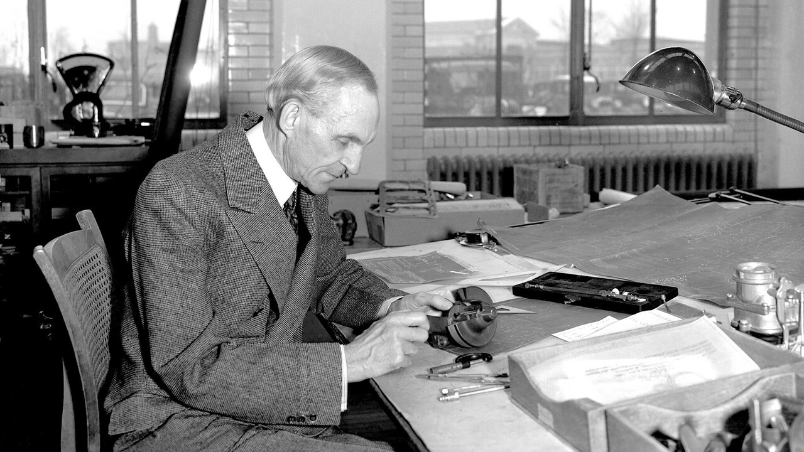
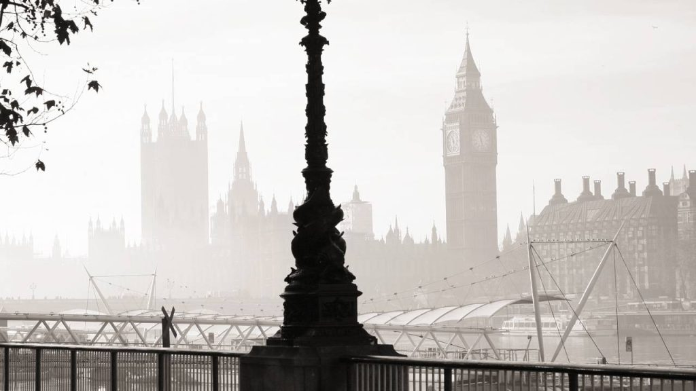
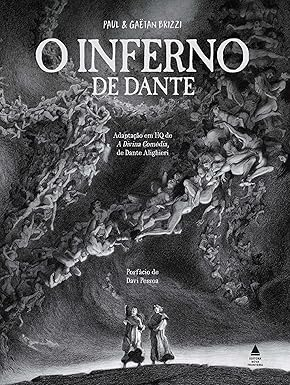
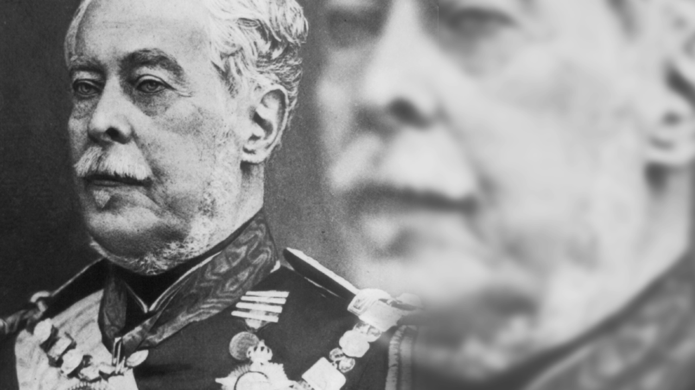
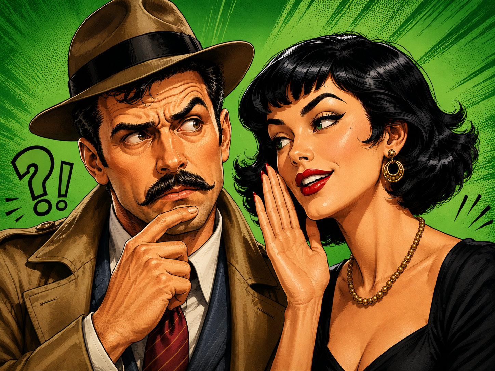

ESTRATAGEMA DE FORD

Henry Ford, o célebre industrial, detestava auxiliares que não cumprissem cegamente suas ordens. Era conhecido o seu estratagema de chamar freqüentemente um empregado do escritório e entregar-lhe um volumoso envelope, com a seguinte recomendação:
— Guarde isto até eu lhe pedir e não diga nada a ninguém.
Dias depois, chamava o chefe do empregado e mandava-o buscar o envelope.
Se o empregado entregava, era despedido. Mas se recusava, afirmando que o Sr. Ford não lhe havia dado nenhum papel, era promovido para um cargo de responsabilidade e mais bem remunerado.
O smog, intensa neblina carregada de fumaças e gases, que cobriu Londres durante vários dias em fins de 1962, causou prejuízos avaliados em 13 bilhões de cruzeiros.

MARÉ BAIXA
Numa praia, encontram-se dois homens de negócios, velhos amigos, que ali descansam por uns dias. Observando o movimento das ondas, diz um dêles:
— A maré está baixando.
— Compro! — retruca imediatamente o outro.
O PIOR LIVRO DO MUNDO

Promoveu-se nos Estados Unidos um concurso singular: a Universidade de Oklahoma constituiu um júri de professôres e alunos para opinar sôbre qual a pior obra da literatura universal. O júri decidiu-se pela "Divina Comédia", de Dante.
ÚLTIMA CONFIDÊNCIA
— E, se acaso voltar, que hei de dizer-lhe, [quando
Me perguntar por ti ?
— Dize-lhe que me viste, uma tarde, [chorando...
Nessa tarde parti.
— Se, arrependido e ansioso, êle indagar : ["Para onde ?
Por onde a buscarei ?"
— Dize-lhe: "Para além... para longe..." [Responde
Como eu mesma: "Não sei".
Ai, é tão vasta a noite ! A meia luz do ocaso
Desmaia... anoiteceu...
Onde vou ? Nem eu sei... Irei seguindo ao [acaso
Até achar o céu...
Eu cheguei a supor que possível me fôsse
Ser amada — e viver.
É tão fácil a morte... Ai, seria tão doce
Ser amada... e morrer !...
SUPERIORIDADE DE CAXIAS

O marechal Luís Alves de Lima e Silva, que foi barão, conde, marquês e duque, era um espírito inteiramente despido de vaidade. Grande cabo de guerra, não perdeu uma só batalha, tendo-se notabilizado principalmente no comando do exército brasileiro na campanha do Paraguai. Foi também o duque de Caxias grande pacificador e administrador. Não obstante tôda a sua glória, pediu, em seu testamento, que não lhe fôssem prestadas as honras militares e que simples soldados carregassem o seu féretro.
GUERRA AO PARDAL
A fim de proteger as colheitas contra a voracidade dos pardais, os chineses empreenderam verdadeira luta de extermínio contra êsses pássaros, contando-se que, em Pequim e arredores, foram mortos mais de 300 mil num só dia. Segundo os ornitologistas, o pardal vive até 40 anos.
PESOS E MEDIDAS DO BRASIL
- Arrôba 14,689 kg
- Quintal 58,328 ,,
- Palmo 22 cm

— Que idade tem a Lidia ?
— Vinte e oito... Pelo menos é o que há muito tempo ouço dizer.
Nos últimos meses da guerra do Paraguai, em 1869, possuía o Brasil 85 navios, dos quais muitos fabricados por Mauá no estaleiro da Ilha das Cobras. Nessa época, era o Brasil considerado a terceira potência naval do mundo.
"Semeai promessas: a ninguém causam prejuízo e o mundo é rico de palavras. A esperança, quando outros nela crêem, faz ganhar muito tempo."
"O homem ama não porque o seu interêsse consiste em amar, mas porque o amor é a essência de sua alma, porque não pode deixar de amar"